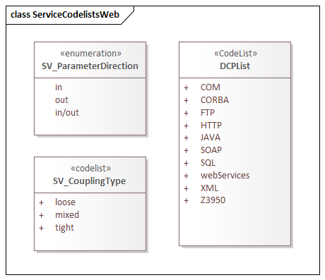
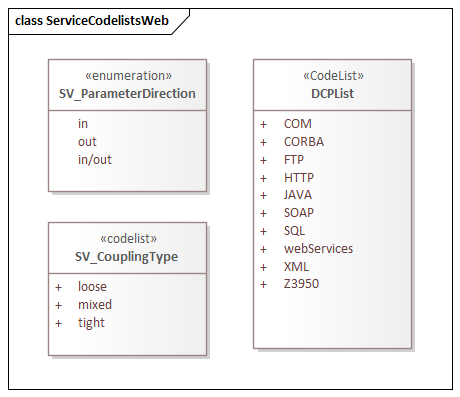

SRV 1.3 is an XML Schema implementation derived from ISO ISO 19115-1, Geographic Information - Metadata - Part 1: Fundamentals, Clause 6.5.14. It includes elements for describing services. The XML schema was encoded using the rules described in ISO/TS 19139:2007.
The namespace URI for srv 1.3 is https://schemas.isotc211.org/19115/-1/srv/1.3.
srv.xsd is the XML Schema document to be referenced by XML documents containing XML elements in the srv 1.3 namespace or by XML Schema documents importing the srv 1.3 namespace. This XML schema includes (indirectly) all the implemented concepts of the srv namespace, but it does not contain the declaration of any types.
serviceInformation.xsd implements the UML conceptual schema defined in ISO 19115-1, Geographic Information - Metadata - Part 1: Fundamentals, Clause 6.5.14. It was created using the encoding rules defined in ISO 19118, ISO 19139.
https://schemas.isotc211.org/19115/-1/srv/1.3.0/serviceInformation.xsd contains the folowing classes:| Name | Standard Prefix | Namespace Location | Schema Location |
|---|---|---|---|
| Geographic Common Objects | gco | https://schemas.isotc211.org/19103/-/gco/1.2 | ../../../../19103/-/gco/1.2/gco.xsd |
| Metadata Common Classes | mcc | https://schemas.isotc211.org/19115/-1/mcc/1.3.0 | ../../../../19115/-1/mcc/1.3.0/mcc.xsd |
| Metadata for Resource Identification | mri | https://schemas.isotc211.org/19115/-1/mri/1.3.0 | ../../../../19115/-1/mri/1.3.0/mri.xsd |
| CITataion and Responsibility | cit | https://schemas.isotc211.org/19115/-1/cit/1.3 | ../../../../19115/-1/cit/1.3.0/cit.xsd |
| Metadata for Resource Distribution | cit | https://schemas.isotc211.org/19115/-1/mrd/1.3 | ../../../../19115/-1/mrd/1.3.0/mrd.xsd |
Written by writeHTMLFiles Version: 2019-01-04 at 2019-01-04T10:27:14.715-07:00